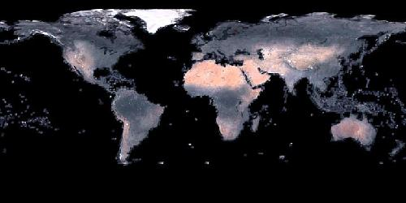

WMS – Web Map Services¶
Accéder à plusieurs différents types de service d’image est possible en utilisant le format WMS dans GDAL. Les services sont accédé en créant un fichier XML de description de service local - il y a des exemples ci-dessous pour chacun des services d’image gérée.
| <GDAL_WMS> | |
|---|---|
| <Service name=”WMS”> | Définie quel mini-pilote utiliser, géré actuellement : WMS, WorldWind, TileService, TMS, TiledWMS or VirtualEarth. (nécessaire) |
| <Version>1.1.1</Version> | Version du WMS. (optionnel, par défaut à 1.1.1) |
|
URL du serveur WMS (nécessaire) |
| <SRS>EPSG:4326</SRS> | Projection de l’image (optionnel, par défaut à EPSG:4326, WMS version 1.1.1 ou inférieur seulement) |
| <CRS>CRS:83</CRS> | Projection de l’image (optionnel, défaut à EPSG:4326, WMS version 1.3.0 ou supérieur seulement) |
| <ImageFormat>image/jpeg</ImageFormat> | Format dans lequel on doit demander les données. Les formats avec des palettes comme image/gif seront converti en RVB. (optionnel, défaut à image/jpeg) |
| <Transparent>FALSE</Transparent> | Définie à TRUE pour inclure “transparent=TRUE” dans la requête GetMap du WMS (optionnel FALSE par défaut). Le format de requête et BandsCount nécessite la gestion de l’alpha. |
| <Layers>modis,global_mosaic</Layers> | Liste de couches séparés par des virgules (nécessaire sauf pour TiledWMS). |
| <TiledGroupName>Clementine</TiledGroupName> | Liste de couches séparée par une virgule (nécessaire pour TiledWMS). |
| <Styles></Styles> | Liste de styles séparés par des virgules. (optionnel) |
| <BBoxOrder>xyXY</BBoxOrder> | Ordonne les coordonnées de la bbox arbitrairement. Peut être nécessaire pour les serveurs à la version 1.3. (optionnel) x – coordonnée X basse, y – coordonnée Y basse, X - coordonnée X haute, Y - coordonnée Y haute |
| </Service> | |
| <DataWindow> | Définie la taille et l’étendue des données. (nécessaire sauf pour TiledWMS et VirtualEarth) |
| <UpperLeftX>-180.0</UpperLeftX> | X (longitude) coordonnée du coin haut-gauche. (optionnel, défaut à -180.0, sauf pour VirtualEarth) |
| <UpperLeftY>90.0</UpperLeftY> | Y (latitude) coordonnée du coin haut -gauche. (optionnel, défaut à 90.0, sauf pour VirtualEarth) |
| <LowerRightX>180.0</LowerRightX> | X (longitude) coordonnée du coin bas-droit. (optionnel, défaut à 180.0, sauf pour VirtualEarth) |
| <LowerRightY>-90.0</LowerRightY> | Y (latitude) coordonnée du coin bas-droit (optionnel, défaut à -90.0, sauf pour VirtualEarth) |
| <SizeX>2666666</SizeX> | Taille de l’image en pixels. |
| <SizeY>1333333</SizeY> | Taille de l’image en pixels. |
| <TileX>0</TileX> | Ajouter aux tuiles une valeur X à plus haute résolution. (ignoré pour WMS, source d’image tuilée seulement, optionnel, défaut à 0) |
| <TileY>0</TileY> | Ajouter aux tuiles une valeur Y à plus haute résolution. (ignoré pour WMS, source d’image tuilée seulement, optionnel, défaut à 0) |
| <TileLevel>0</TileLevel> | Niveau des tuiles à la plus haute résolution. (ignoré pour WMS, source d’image tuilée seulement, optionnel, défaut à 0) |
| <TileCountX>0</TileCountX> | Peut être utilisé pour définir la taille de l’image, SizeX = TileCountX * BlockSizeX * 2TileLevel. (source d’image tuilée seulement, optionnel, défaut à 0) |
| <TileCountY>0</TileCountY> | Peut être utilisé pour définir la taille de l’image, SizeY = TileCountY * BlockSizeY * 2TileLevel (source d’image tuilée seulement, optionnel, défaut à 0). |
| <YOrigin>top</YOrigin> | Peut être utilisé pour définir la position de l’origine Y en fonction de la grille de la tuile. Les valeurs possibles sont ‘top’, ‘bottom’, et ‘default’, pour lesquels le comportement est spécifique au mini-pilote (seulement le mini -pilote TMS, optionnel, ‘bottom’ par défaut pour TMS). |
| </DataWindow> | |
| <Projection>EPSG:4326</Projection> | Projection de l’image (optionnel, défaut à la valeur rapporté par le mini- pilote ou EPSG:4326) |
| <BandsCount>3</BandsCount> | Nombre de bandes/canaux, 1 pour des données en nuance de gris, 3 pour RVB. (optionnel, défaut à 3) |
| <BlockSizeX>1024</BlockSizeX> | Taille du bloc en pixels. (optionnel, défaut à 1024, sauf pour VirtualEarth) |
| <BlockSizeY>1024</BlockSizeY> | Taille du bloc en pixels. (optionnel, défaut à 1024, sauf pour VirtualEarth) |
| <OverviewCount>10</OverviewCount> | compte des couches à résolution réduite chacune ayant des résolutions deux fois plus petites. (optionnel, la valeur par défaut est calculé lors du lancement) |
| <Cache> | Active le cache disque local. Permet les opérations offline. (optionnel, par défaut sans cache) |
| <Path>./gdalwmscache</Path> | Endroit où stocker les fichiers du cache. Il est sain d’utiliser le même chemin de cache pour différentes sources de données. (optionnel, défaut à ./gdalwmscache) |
| <Depth>2</Depth> | Nombre de répertoire de couches. 2 résultera à des fichiers écrit sous la forme cache_path/A/B/ABCDEF... (optionnel, défauts à 2) |
| <Extension>.jpg</Extension> | Ajout aux fichiers de cache. (optionnel, défaut à none) |
| </Cache> | |
| <MaxConnections>2</MaxConnections> | nombre maximal de connections simultanée. (optionnel, 2 par défaut) |
| <Timeout>300</Timeout> | timeout de la connection en secondes (optionnel, 300 par défauts). |
| <OfflineMode>true</OfflineMode> | Ne télécharge aucune nouvelles images, utilise seulement celle du cache. Utile seulement quand le cache est activé (optionnel, défaut à false). |
| <AdviseRead>true</AdviseRead> | Active l’appel à l’API AdviseRead – télécharge les images dans le cache (optionnel, défaut à false). |
| <VerifyAdviseRead>true</VerifyAdviseRead> | Ouvre chaque image et fait des opérations de vérifications basiques avant d’écrire dans le cache. La désactivation peut avoir des cycles de CPU si le serveur est reconnus comme toujours renvoyer des images correctes. (optionnel, défaut à true) |
| <VerifyAdviseRead>true</VerifyAdviseRead> | ouvre chaque image téléchargée et réalise des vérifications basiques avant l’écriture dans le cache. Désactivé, cela peut sauver des cycles CPU si le serveur est reconnu comme retournant toujours des images correctes (optionnel, true par défaut). |
| <ClampRequests>false</ClampRequests> | Est ce que la requête, qui autrement serait partiellement en dehors de la fenêtre de données définie, être découpé résultant en une image plus petite que la taille du bloc demandée (optionnel, true par défaut). |
| <UserAgent>GDAL WMS driver (http://www.gdal.org/frmt_wms.html) </UserAgent> | Chaîne User-agent HTTP. Certains serveurs peuvent nécessiter un user-agent connus tel que “Mozilla/5.0” (optionnel, “GDAL WMS driver (http://www.gdal.org/frmt_wms.html)” par défaut). Ajouté à GDAL 1.8.0 |
| <Referer>http://example.foo/</Referer> | Chaîne de Referer HTTP. Certains serveurs peuvent le nécessiter (optionnel). Ajouter à GDAL 1.9.0 |
| </GDAL_WMS> | |
Minipilote¶
Le pilote WMS de GDAL gère plusieurs ‘minipilote’ interne, qui permettent des accès à différents services de cartographiques web. Chacun de ces services peuvent gérer un ensemble différent d’options dans le bloc Service.
WMS¶
Communications avec un serveur WMS OGS. Possède la gestion pour les requêtes tuilées et non tuilées.
TileService¶
Service pour gérer la communication avec un service WorldWind. L’accès est toujours basé sur les tuiles.
WorldWind¶
Accès aux services web tuilé de WorldWind. L’accès est toujours basé sur les tuiles.
TMS (GDAL 1.7.0 et sup.)¶
Le mini-pilote TMS est structuré d’abord pour gérer l’utilisation des spécifications TMS. Ce service gère seulement l’accès aux tuiles.
Parce que le TMS est similaire à beaucoup d’autres faveurs de services ‘x/y/z’ sur le web, ce service peut également être utilisé pour accéder à ces services. Pour l’utiliser de cette façon, vous pouvez utiliser des variables de remplacement, de la forme ${x}, ${y}, etc.
Les variables gérées (le nom est sensible à la casse) sont :
- ${x} – position x de la tuile
- ${y} – position y de la tuile. Cela peut être soit le haut ou le bas de l’ ensemble des tuile, basé sur le fait que le paramètre YOrigin est basé sur true ou false.
- ${z} – position z de la tuile – niveau de zoom
- ${version} – paramètre de version, définie dans le fichier de config. 1.0.0 par défaut.
- ${format} – format parameter, set in the config file. Defaults to ‘jpg’.
- ${layer} – layer parameter, set in the config file. Defaults to nothing.
Un ServerURL typique ressemblerait à cela :
http://labs.metacarta.com/wms-c/Basic.py/${version}/${layer}/${z}/${x}/${y}.${format}
Dans le but de mieux convenir aux utilisateurs du TMS, n’importe quel URL qui ne contient pas “${” aura automatiquement la chaîne ci-dessus (après “Basic.py/”) rajoutée à leur URL.
Le service TMS a trois éléments de configuration XML qui sont différent des autres services : Format qui est définie par défaut à jpg, Layer qui n’as pas de valeur par défaut, et Version dont la valeur par défaut est 1.0.0.
De plus, le service TMS respecte un paramètre supplémentaire, au niveau du DataWindow,qui est l’élément YOrigin. Cet élément doit être l’un parmi bottom (par défaut dans le TMS) ou top, qui correspond aux services OpenStreetMap et plus autres très populaires.
Deux exemples d’usage de service TMS sont présentés plus bas.
OnEarth Tiled WMS (GDAL 1.9.0 et sup.)¶
Le mini-pilote WMS tuilé d’OnEarth gère les spécifications WMS tuilés implémentées pour le pilote JPL d’OnEarth suivant la spécification http://onearth.jpl.nasa.gov/tiled.html.
Un fichier typique de configuration WMS tuilé d’OnEarth devrait ressembler à cela :
<GDAL_WMS>
<Service name="TiledWMS">
<ServerUrl>http://onmoon.jpl.nasa.gov/wms.cgi?</ServerUrl>
<TiledGroupName>Clementine</TiledGroupName>
</Service>
</GDAL_WMS>
La plupart des autres informations sont automatiquement récupérées du serveur distant en utilisant la méthode GetTileService au moment de l’ouverture.
VirtualEarth (GDAL 1.9.0 et sup.)¶
Accès au service de tuile par le web de Virtual Earth. L’accès est toujours basé sur les tuiles.
La variable ${quadkey} doit être trouvé dans l’élément ServerUrl.
L’élément DataWindow peut être omis. Les valeurs par défaut sont :
- UpperLeftX = -20037508.34
- UpperLeftY = 20037508.34
- LowerRightX = 20037508.34
- LowerRightY = -20037508.34
- TileLevel = 19
- OverviewCount = 18
- SRS = EPSG:900913
- BlockSizeX = 256
- BlockSizeY = 256
Exemples¶
onearth_global_mosaic.xml - mosaic Landsat à partir du serveur WMS OnEarth
gdal_translate -of JPEG -outsize 500 250 onearth_global_mosaic.xml onearth_global_mosaic.jpg
gdal_translate -of JPEG -projwin -10 55 30 35 -outsize 500 250 onearth_global_mosaic.xml onearth_global_mosaic2.jpg

metacarta_wmsc.xml - il est possible de configurer un service WMS se conformant à un cache WMS-C en définissant un nombre d’aperçue et la “taille du bloc” comme la taille de la tuile du cache. L’exemple suivant est un échantillon définie pour une cache WMS-C avec un “profile Global” de 19 niveau :
gdal_translate -of PNG -outsize 500 250 metacarta_wmsc.xml metacarta_wmsc.png

tileservice_bmng.xml - TileService, Blue Marble NG (Janvier)
gdal_translate -of JPEG -outsize 500 250 tileservice_bmng.xml tileservice_bmng.jpg

tileservice_nysdop2004.xml - TileService, NYSDOP 2004
gdal_translate -of JPEG -projwin -73.687030 41.262680 -73.686359 41.262345 -outsize 500 250 * tileservice_nysdop2004.xml tileservice_nysdop2004.jpg

Exemple du service TMS d’OpenStreetMap : se connecte au service de tuile d’OpenStreetMap. Notez que ce fichier permet l’utilisation du cache de tuile : plus d’information sur la configuration des paramètres du cache de tuile est disponible ci-dessus.
gdal_translate -of PNG -outsize 512 512 frmt_wms_openstreetmap_tms.xml openstreetmap.png</tt>
Exemple de la couche TMS de MetaCarta, accède à la couche par défaut du TMS de TMS.
gdal_translate -of PNG -outsize 512 256 frmt_wms_metacarta_tms.xml metacarta.png</tt>
Exemple BlueMarble sur Amazon S3 accédé avec le minipilote TMS.
Google Maps accédé avec le minipilote TMS.
Serveur carto de tuiles d’ArcGIS accédé avec le minipilote TMS.
Cartes du géoportail Suisse accédé avec le minipilote TMS (nécessite GDAL >= 1.9.0)
Exemples du WMS tuilé de OnEarth Clementine, journalier, et srtm.
Couche Aerial de VirtualEarth accédé avec le minipilote VirtualEarth.
Syntaxe ouverte¶
Le pilote WMS peut ouvrir :
un fichier XML de description de service local : gdalinfo description_file.xml
le contenu d’un fichier XML de description fournie comme nom de fichier :
gdalinfo "<GDAL_WMS><Service name=\"TiledWMS\"><ServerUrl>http://onearth.jpl.nasa.gov/wms.cgi? \ </ServerUrl><TiledGroupName>Global SRTM Elevation</TiledGroupName></Service></GDAL_WMS>"(GDAL >= 1.9.0) une URL d’un service WMS, préfixé avec WMS: :
gdalinfo "WMS:http://wms.geobase.ca/wms-bin/cubeserv.cgi"
Une liste de sous jeu de données sera retournée, résultant de la lecture de la requête GetCapabilities sur ce serveur.
(GDAL >= 1.9.0) une pseudo requête GetMap, telle que le nom du sous jeu de données l’a retournée par la syntaxe précédente :
gdalinfo "WMS:http://wms.geobase.ca/wms-bin/cubeserv.cgi?SERVICE=WMS&VERSION=1.1.1& \ REQUEST=GetMap&LAYERS=DNEC_250K:ELEVATION/ELEVATION&SRS=EPSG:42304&BBOX=-3000000,-1500000,6000000,4500000"
(GDAL >= 1.9.0) l’URL de base d’un service WMS tuilé, préfixé avec WMS: et avec l’argument GET request=GetTileService :
gdalinfo "WMS:http://onearth.jpl.nasa.gov/wms.cgi?request=GetTileService"
Une liste de sous jeu de données sera renvoyée, résultant de la lecture de la requête du GetTileService sur ce serveur.
(GDAL >= 1.9.0) l’URL d’un service REST pour un serveur carto ArcGIS :
gdalinfo "http://server.arcgisonline.com/ArcGIS/rest/services/World_Imagery/MapServer?f=json&pretty=true"
Voir également¶
- OGC WMS Standards : http://www.opengeospatial.org/standards/wms
- Recommandation du WMS Tiling Client (WMS-C) : http://wiki.osgeo.org/index.php/WMS_Tiling_Client_Recommendation
- TileService WorldWind : http://www.worldwindcentral.com/wiki/TileService
- Spécification TMS
- Spécification WMS Tuilé OnEarth